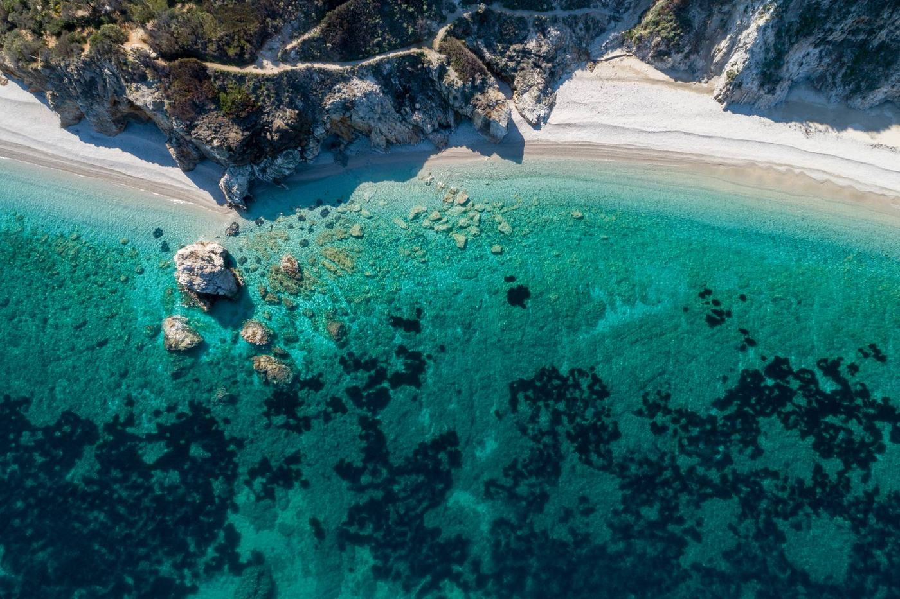
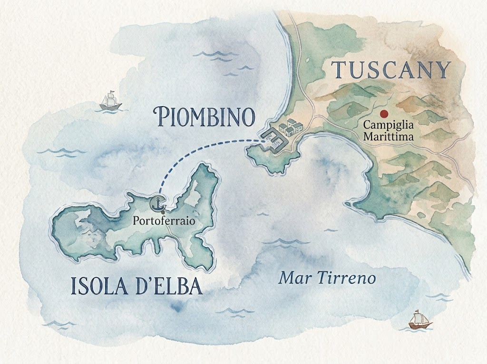
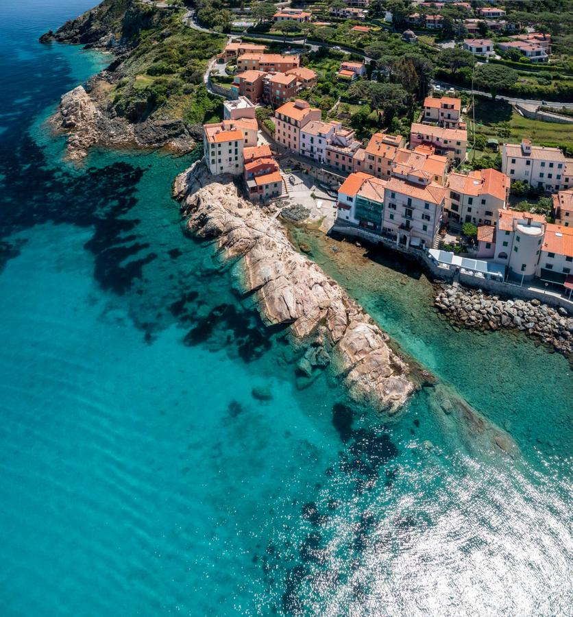
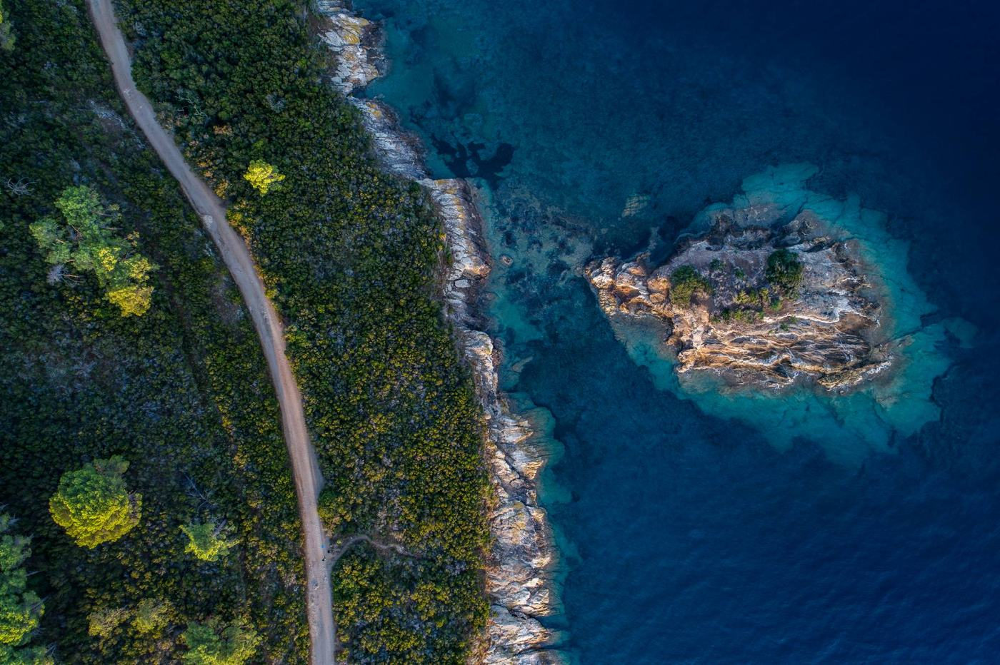
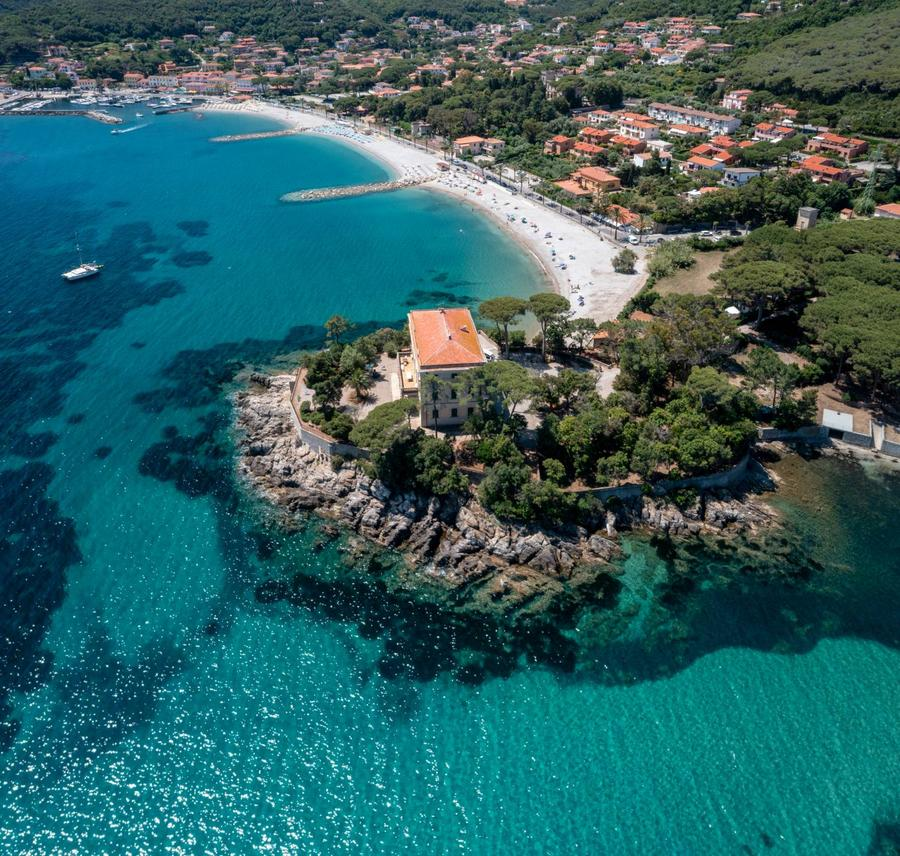

La novità del 2027 · Detour Isola d'Elba
New for 2027 · Elba Island Detour
Dopo tredici edizioni sali su un traghetto con la tua bici e sbarchi su un'isola. Il percorso del Detour all'Isola d'Elba è compreso nell'iscrizione e vale sia per il percorso Originale sia per il percorso Newbie.
After thirteen editions you board a ferry with your bike and land on an island. The Elba Detour route is included in your entry and it works with the Original route and with the Newbie route alike.

Ph. Roberto Ridi · IG @robertoridi_ph

Come funziona
How it works
La traccia del Detour è dentro l'iscrizione, sia con il percorso Originale da 460 km sia con il Newbie da 160.
Nella traccia c'è il bivio che porta al porto di Piombino. Chi non sale a bordo prosegue e basta.
Quando ti iscrivi ci dici se pensi di farlo. Poi ricevi tutte le tracce e decidi davvero quando sei sulla strada.
The Detour track is part of your entry, with the 460 km Original route and with the 160 km Newbie alike.
The track shows the junction down to the harbour of Piombino. If you do not board, you simply carry on.
When you enter you tell us whether you think you will ride it. Then you receive all the tracks and you truly decide on the road.
Invece c'è un itinerario che prosegue, arriva al porto e porta anche te sull'isola. Centosessanta chilometri diventano trecento, e anche la tua prima volta al Tuscany Trail passa da un'isola.
Instead there is an itinerary that carries on, reaches the harbour and takes you to the island as well. One hundred and sixty kilometres become three hundred, and your first Tuscany Trail goes through an island too.
Il Detour è l'ultima parte del viaggio, prima del rientro. L'abbiamo messo lì apposta. Quando arrivi a quel bivio hai già i chilometri nelle gambe e sai quanto tempo e quanta energia ti restano, quindi decidi con i fatti in mano e non con le previsioni fatte a gennaio.
The Detour is the last part of the journey, before the way home. We put it there on purpose. When you reach that junction the kilometres are already in your legs and you know how much time and energy you have left, so you decide with facts in hand instead of with the plans you made in January.
L'isola
The island
Perché dopo tredici edizioni volevamo qualcosa che non fosse un'altra strada bianca in più. E l'Elba non è un'altra strada bianca. È un'isola verde, con il mare che compare a ogni curva e la sagoma della Corsica nelle giornate limpide.
Because after thirteen editions we wanted something that was not just one more white road. And Elba is not one more white road. It is a green island, with the sea appearing at every bend and the outline of Corsica on clear days.

Ph. Roberto Ridi · IG @robertoridi_ph
C'è la casa dove Napoleone visse in esilio, c'è un borgo spagnolo, ci sono le miniere che hanno fatto la storia di questa terra e c'è il pescato del giorno la sera. Ma la ragione vera è un'altra. L'Elba si vede bene solo dalla bicicletta giusta, e la bicicletta giusta è quella con cui stai già pedalando la Toscana.
There is the house where Napoleon lived in exile, there is a Spanish village, there are the mines that shaped this land and there is the catch of the day in the evening. But the real reason is another one. Elba is best seen from the right bicycle, and the right bicycle is the one you are already riding through Tuscany.

Ph. Roberto Ridi · IG @robertoridi_ph
Fra Piombino e Portoferraio c'è quasi una corsa ogni ora e la traversata dura un'ora scarsa. La bici sale senza complicazioni, e se ne perdi una prendi la prossima.
Between Piombino and Portoferraio there is almost one crossing every hour and it takes just under an hour. The bike goes on board without trouble, and if you miss one you take the next.
Chi partecipa al Tuscany Trail avrà uno sconto riservato sul biglietto. Stiamo chiudendo l'accordo e lo scriviamo qui appena è fatto.
Tuscany Trail riders will get a reserved discount on the ticket. We are closing the agreement and we will write it here as soon as it is done.
Stiamo ancora collaudando il percorso definitivo, quindi non ti diamo numeri che poi cambiano. Quello che possiamo dirti è che il Detour è pensato per stare in una giornata. Tirata, però.
We are still testing the final route, so we are not giving you numbers that will change later. What we can tell you is that the Detour is designed to fit into one day. A hard one, though.
Il consiglio nostro è di dormire una notte sull'isola. Il Tuscany Trail non è una corsa contro il tempo, e l'Elba di sera è metà del motivo per cui ci andiamo. I chilometri definitivi e il dislivello arrivano con la traccia provvisoria, che ricevi appena ti iscrivi.
Our advice is to sleep one night on the island. The Tuscany Trail is not a race against the clock, and Elba in the evening is half the reason we go there. Final distance and elevation come with the provisional track, which you receive as soon as you enter.

Ph. Roberto Ridi · IG @robertoridi_ph
Allora sai già tutto. Sai com'è la partenza, sai la polvere del primo pomeriggio, sai cosa si dice al Base Camp la sera. Non ti raccontiamo di nuovo la Toscana.
L'unica cosa che non sai è come si sale su un traghetto con la bici dopo tre giorni di strade bianche. Nel 2027 quella è la parte che non hai ancora pedalato.
Then you know it all. You know the start, you know the dust of the first afternoon, you know what people say at the Base Camp in the evening. We are not going to describe Tuscany to you again.
The one thing you do not know is how it feels to board a ferry with your bike after three days of white roads. In 2027 that is the part you have not ridden yet.
Le domande che ci fanno tutti
The questions everyone asks us
La traccia del Detour è dentro l'iscrizione, come tutte le altre. Per il biglietto del traghetto stiamo chiudendo uno sconto riservato a chi partecipa.
Sì. Per chi fa il Newbie c'è un itinerario dedicato che aggiunge l'isola. Newbie più Detour fa trecento chilometri.
Nessuno tiene il conto di chi ci è andato. Ognuno torna a casa con il viaggio che si è costruito, ed è sempre stata la cosa migliore di questo evento.
Quando ti iscrivi ci dici se pensi di fare il Detour. Non è una scelta definitiva, ricevi comunque tutte le tracce e puoi cambiare idea in viaggio.
È il momento in cui l'isola dà il meglio. È tutto aperto, non è ancora piena, e si trova di tutto, dagli alberghi sul porto agli agriturismi dell'interno.
È la stessa con cui pedali il Tuscany Trail. Misto asfalto e sterrato, gomme da gravel in ordine. Se la tua bici regge la Toscana regge anche l'Elba.
Non te lo promettiamo. Il percorso del Tuscany Trail cambia ogni anno e le strade che attraversiamo si riaprono una trattativa alla volta. Quello che sappiamo è che nel 2027 l'Elba c'è.
Insieme alla traccia arrivano tutte le informazioni. Il tracciato definitivo si svela all'evento, come ogni anno.
The Detour track is part of your entry, like all the others. For the ferry ticket we are closing a discount reserved to riders.
Yes. Newbie riders have their own itinerary that adds the island. Newbie plus Detour is three hundred kilometres.
Nobody keeps count of who went. Everyone goes home with the journey they built, and that has always been the best thing about this event.
When you enter you tell us whether you think you will ride the Detour. It is not a final choice, you receive all the tracks anyway and you can change your mind on the road.
It is when the island is at its best. Everything is open, it is not crowded yet, and you find anything, from hotels by the harbour to farmhouses inland.
It is the same bike you ride on the Tuscany Trail. Mixed tarmac and gravel, decent gravel tyres. If your bike handles Tuscany it handles Elba.
We are not promising it. The Tuscany Trail route changes every year and the roads we cross reopen one negotiation at a time. What we know is that in 2027 Elba is there.
All the information comes with the track. The final route is revealed at the event, as every year.
1 novembre, apre l'iscrizione bundle. Tuscany Trail più una seconda avventura della Bike Adventure Series.
3 dicembre, apre l'iscrizione con il solo biglietto Tuscany Trail.
1 November, bundle entries open. Tuscany Trail plus a second Bike Adventure Series adventure.
3 December, Tuscany Trail only entries open.